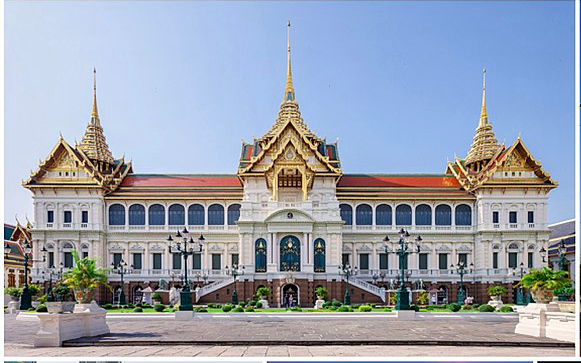
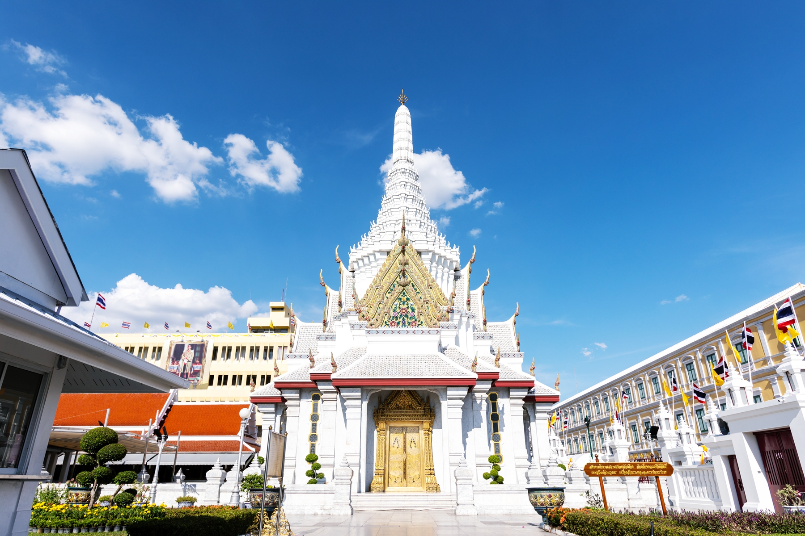
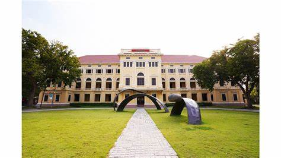

วัดพระแก้ว มีชื่อเต็มว่า “วัดพระศรีรัตนศาสดาราม” แลนมาร์คที่สำคัญของกรุงเทพฯ และประเทศไทย เป็นวัดที่พระบามสมเด็จพระพุทธยอดฟ้าจุฬาโลกมหาราช (รัชกาลที่ 1) โปรดเกล้าฯ ให้สร้างขึ้นในปี พ.ศ. 2325 เป็นวัดในพระบรมมหาราชวัง เป็นที่ประดิษฐานพระพุทธมหามณีรัตนปฏิมากร (พระแก้วมรกต) พระคู่บ้านคู่เมืองของแผ่นดินสยาม เป็นสถานที่ท่องเที่ยวที่สำคัญของประเทศ มีท่องเที่ยวทั้งชาวไทย และชาวต่างชาติ เดินทางไปเที่ยวอย่างไม่ขาดสาย สามารถเข้าไปสักการะพระแก้วมรกต ชมความสวยงามของ ควรแต่งกายด้วยชุดสุภาพ ให้เหมาะสมกับสถานที่ ซึ่งเรียกได้ว่าวัดพระแก้ว เป็นที่วัดที่สำคัญ และเป็นที่เชิดหน้าชูตาของบ้านเมือง ควรแต่งกายสุภาพ คนไทยเข้าชมฟรี
|

ศาลหลักเมืองกรุงเทพมหานคร ตั้งอยู่ตรงข้ามสนามหลวง เยื้องกับวัดพระแก้ว หัวมุมถนนระหว่างถนนราชดำเนินในและถนนหลักเมือง เป็นศาลที่สร้างขึ้นพร้อมกับการสถาปนากรุงรัตนโกสินทร์เป็นราชธานี ในสมัยรัชกาลที่ 1 ตามธรรมเนียมพราหมณ์ว่า ก่อนสร้างเมืองต้องทำพิธียกเสาหลักเมือง เพื่อเป็นสิริมงคลแก่บ้านเมือง ในอดีต ศาลหลักเมือง มีเพียงศาลากันแดดกันฝนเท่านั้น ทั้งเสาหลักเมืองและศาลาเสื่อมโทรมไปตามสภาพ ในสมัยรัชกาลที่ 4 โปรดเกล้าให้สร้างขึ้นใหม่อีกหนึ่งเสา ประดิษฐานในอาคารสร้างใหม่ มียอดปรางค์ ทำให้มี 2 เสา จนถึงปัจจุบัน อีกทั้งยังมีการปฏิสังขรณ์ศาลหลักเมืองหลายครั้ง ทำให้มีความสวยงาม มีศาลเทพารักษ์ทั้ง 5 องค์ คือ พระเสื้อเมือง, พระทรงเมือง, พระกาฬไชยศรี, เจ้าอเจตคุปต์ และเจ้าหอกลอง ผู้คนนิยมมากราบไหว้ เพื่อความเป็นสิริมงคล ช่วยหนุนดวงเสริมความมั่นคงในชีวิต
|

มิวเซียมสยาม พิพิธภัณฑ์การเรียนรู้เป็นพิพิธภัณฑ์ที่ใช้เทคนิคการเล่าเรื่องแบบโต้ตอบ โดยใช้ตัวละคร 7 ตัว เป็นตัวกลาง เป็นแหล่งเรียนรู้ที่มีจุดมุ่งหมายในการแสดงตัวตนของชนในชาติ ซึ่งทำให้ผู้เข้าชมได้เรียนรู้รากเหง้าของชาวไทย ความเป็นมาของชนชาติไทย ตั้งแต่อดีตจนถึงปัจจุบัน ผ่านสื่อหลากหลายรูปแบบ ทำให้มีความน่าสนใจ ดึงดูดผู้เข้าชมได้อย่างมากมาย อีกทั้งสถานที่ยังมีความสวยงาม ถ่ายรูปเก๋ๆ กันได้ มีสถาปัตยกรรมต่างๆ ทั้งภายในและภายนอกอาคาร ไม่ใกล้ไม่ไกลอยู่ในกรุงเทพนี่เองค่ะ ใครที่ยังไม่เคยไป ลองไปเยี่ยมกันดูได้นะ ได้ความรู้ แถมยังสนุกอีกต่างหาก
ค่าเข้าชม มิวเซียมสยาม พิพิธภัณฑ์การเรียนรู้
บุคคลทั่วไป
⦁ นักเรียน/นักศึกษา (อายุ 15 ปีขึ้นไป) 50 บาท
⦁ ผู้ใหญ่ คนไทย 100 บาท
⦁ ผู้ใหญ่ ชาวต่างชาติ 200 บาท
หมู่คณะ (5 คน ขึ้นไป)
⦁ นักเรียน/นักศึกษา (อายุ 15 ปีขึ้นไป) 25 บาท
⦁ ผู้ใหญ่ คนไทย 50 บาท
⦁ ผู้ใหญ่ ชาวต่างชาติ 100 บาท
|
.jpeg)
จุดนัดพบแห่งใหม่ของไลฟ์สไตล์บนถนนมหาราช ตั้งอยู่ริมแม่น้ำเจ้าพระยา เป็นศูนย์กลางการท่องเที่ยว ซึ่งเป็นมรดกทางวัฒนธรรม และมีอารยธรรมที่เก่าแก่ เดิมเคยเป็นถนนข้างกำแพงพระราชวังหลวง ปัจจุบันมีการพัฒนาเป็นคอมมูนิตี้ช็อปปิ้งมอลล์ เปิดเป็นริเวอร์ไซต์วอร์ค ให้เข้าถึงแม่น้ำ เป็ยสถานที่ทานข้าว นั่งชิลล์ริมน้ำ รับลม เดินเล่น พักผ่อนหย่อนใจ ถ่ายรูปสวยๆ ลงโซเชียลมีเดียเก๋ๆ หรือมีบริการรถตุ๊กๆ รถโดยสารที่เป็นไฮไลท์สำคัญของกรุงเทพฯ ไปยังสถานที่ท่องเที่ยวใกล้เคียงได้หลายที่ โดยเรียกผ่านแอปพลิเคชั่น Tuk Tuk Hop ส่วนค่าบริการเป็นแบบเหมาจ่ายรายวัน (เฉพาะที่ท่ามหาราช ส่วนเรียกสถานที่อื่น คิดค่าโดยสารตามปกติ) สะดวกจริงๆ
|